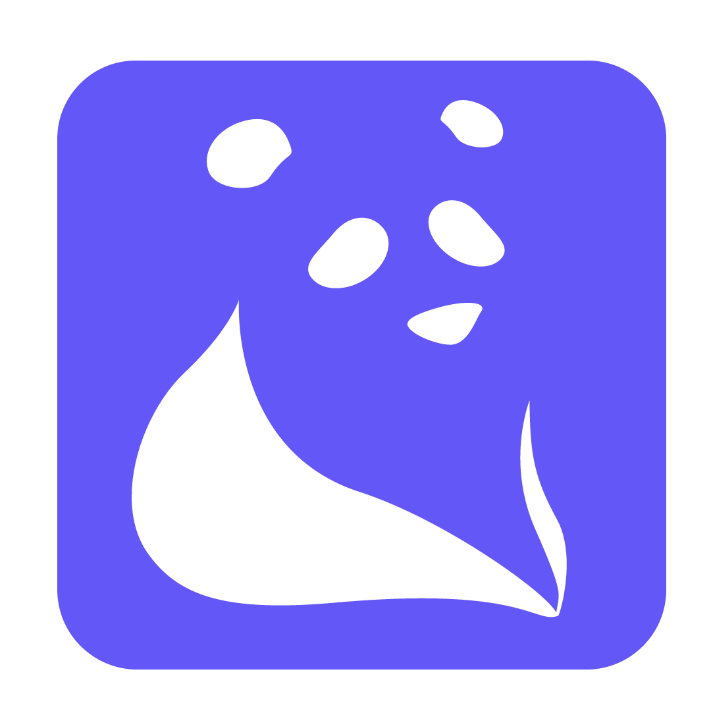

<mat-toolbar class="navbar is-fixed-top">
  <span style="display: contents;">
    
    <span> Feel Free</span>
  </span>
  <span class="example-spacer"></span>
  <div style="font-size: x-large;">
    <button mat-icon-button [routerLink]="[ '/chats']" aria-label="Example icon button with a menu icon">
      <mat-icon *ngIf="isNewMsgLength==0" class="example-icon">
        <i class="icon-paper-plane icons"></i>
      </mat-icon>
      <mat-icon *ngIf="isNewMsgLength>0" matBadge="{{isNewMsgLength}}" matBadgeColor="warn" class="example-icon">
        <i class="icon-paper-plane icons"></i>
      </mat-icon>
    </button>
  </div>
</mat-toolbar>
